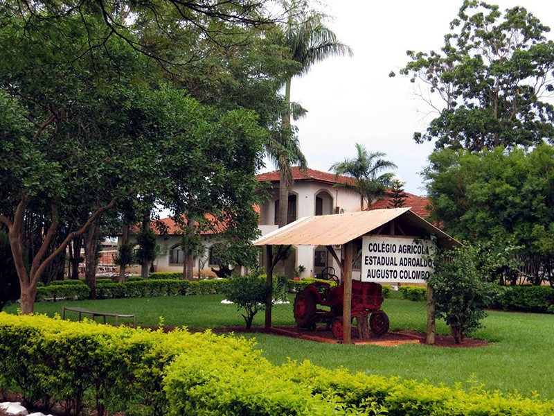
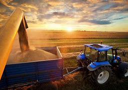

O avanço da tecnologia no campo para a sociedade
A volta dos jovens para o campo vem aumentando nos últimos anos, saindo do contexto das décadas passadas onde buscavam sair das áreas rurais, vindo para as cidades em busca de uma melhoria em suas vidas.

Como a tecnologia está mudando o pensamento das pessoas
As pessoas cada vez se interessando mais com o passar anos, a agronomia com a tecnologia evoluindo constantemente, se espalhando em forma de conhecimento para nós, nos fazendo aprender mais sobre essa área de trabalho e empreendimento, cada vez sendo mais interessante, como sempre mostrando sua importância para os seres humanos, não sendo deixado de lado igual muitas vezes já mostrado pela falta de conhecimento vindo das pessoas.

A tecnologia dando mais oportunidades de profissões na agricultura
Agronegócio tendo seus cursos, escolas agrícolas, até mesmo faculdades, sendo uma das áreas mais procuradas como uma profissão que dá, um futuro bom, uma boa posição social, pela sua importância para nós e pelo seu incrível aumento no desenvolvimento mundial, as pessoas saindo das indústrias para os campos, mostrando as chances sendo cada vez melhores, opções maiores para as pessoas, criando mais oportunidades de vida para todos criando mais oportunidades para todos se criam pensamentos de tentar uma vida profissional na agrícola, fazendo aumentar as áreas de trabalho diminuindo a super lotação das cidades, abrindo mais vagas para aqueles que não pretendem sair da área urbana para a rural, fazendo ter mais espaços em múltiplos interesses pessoais, na parte profissional.